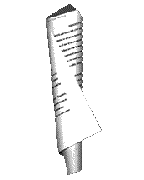

DMA 1.0-7 On-line HTML Edition last updated 2001-05-23-16:42 -0700 (pdt)Welcome to the Document Management Alliance's DMA 1.0 Specification! This specification has been approved by the DMA Advisory Council for general use, as of December 24, 1997.
If you're new to DMA, or prefer a printable PDF rendition to this online HTML rendition of the specification, you might want to look at the DMA home page. If this is your first time looking at the DMA specification, please read the Introduction. Comments? Please send mail to the DMA Technical Committee.
DMA Technical Committee
Copyright © 1995, 1996, 1997 AIIM International, All rights reserved.
- DMA 1.0-7 Online Web Version (2001-05-23)
- This index is updated to provide correct links to current material and to fit into the AIIM DMware structure. There is no change to the content of DMA 1.0-6. The entry to the online Web Version is
default.htm, notindex.htm, which is here part of the construction structure.- DMA 1.0-6 Updated to reflect PDF Creation (1999-02-23)
- The contribution of John Kinsky to creation of the PDF is acknowledged and the revision date changed to reflect that of the PDF version.
- DMA 1.0-5 Creation of PDF of latest material (1998-10-09)
- The PDF version is edited and derived from the latest material: DMA 1.0-4 with expansion of the acknowledgments to encompass the full set of participants.
- Some corrections to the sample source code ar
- DMA 1.0-4 Provisional Clean-Ups (1998-08-03)
- The HTML version is updated to correct some simple typographical errors and omissions, and the source-code samples and header files are updated with corrections.
DMA 1.0-7 created 2001-05-23-16:33 -0700 (pdt) by orcmid
$$Author: Orcmid $
$$Date: 01-05-23 16:42 $
$$Revision: 2 $